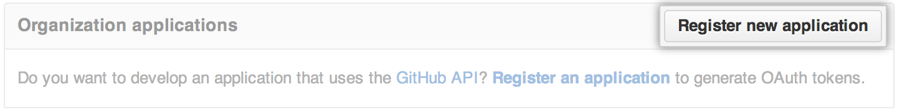

You can use the JIRA DVCS plugin to scan commits and pull requests, creating relevant metadata and hyperlinks in any mentioned JIRA Issues.
GitHub settings
If you'd like to link the JIRA DVCS plugin with an organization, click the name of your organization in the left sidebar.

In the user settings sidebar, click Applications.

At the top of the page, under Developer applications (for a user account) or Organization applications (for an organization account), click Register new application. 
Under Application name, type "JIRA".
Under Homepage URL, type the full URL to your JIRA instance.
Under Authorization callback URL, type the full URL to your JIRA instance.
Click Register application.
Under Developer applications, note the "Client ID" and "Client Secret" values.
JIRA settings
On your JIRA instance, log into an account with administrative access.
At the top of the page, click the Settings ("gear") icon.
From the dropdown menu, choose Add-ons.
In the left sidebar, under Source Control, click DVCS Accounts.
Click Link Bitbucket or GitHub account.
Under Host, choose either GitHub or GitHub Enterprise from the dropdown menu.
Under Team or User Account, type the name of your GitHub.com or GitHub Enterprise account.
Under OAuth Key, type the "Client ID" shown for the developer application you created earlier on GitHub.com or GitHub Enterprise.
Under OAuth Secret, type the "Client Secret" shown for the developer application you created earlier on GitHub.com or GitHub Enterprise.
If you don't want to automatically link new repositories owned by your GitHub.com or GitHub Enterprise account, unselect Auto Link New Repositories.
If you don't want to enable smart commits, unselect Enable Smart Commits.
Click Add.
Review the permissions that you are granting to your GitHub.com or GitHub Enterprise account and click Authorize application.
If necessary, type your password to continue.
Your repositories should now be listed on the DVCS Connector page.
Further reading/viewing
- GitHub Integrations • JIRA (YouTube)
- Linking a Bitbucket or GitHub repository with JIRA OnDemand (Atlassian Documentation)